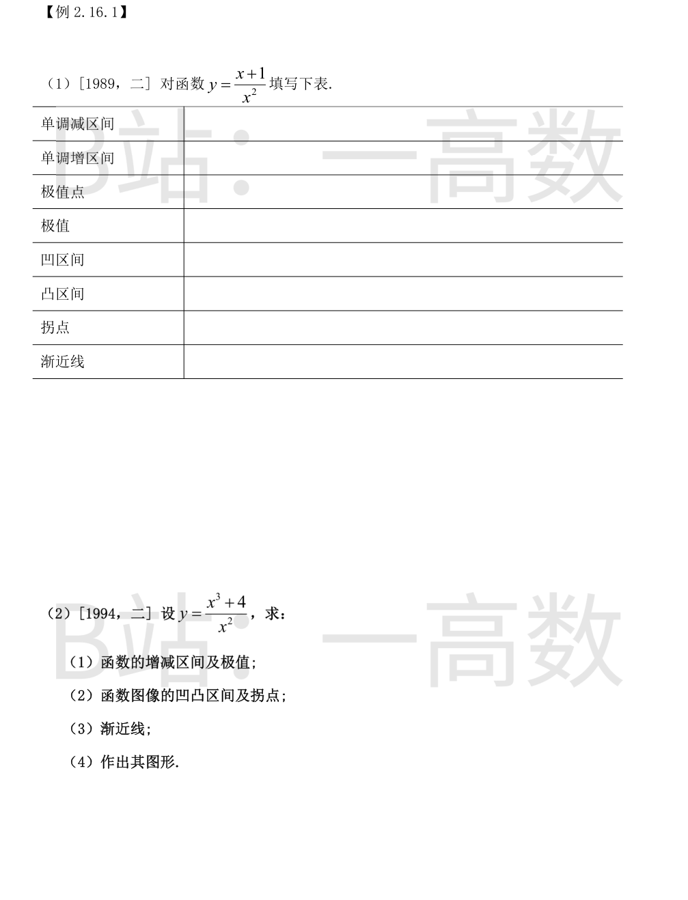
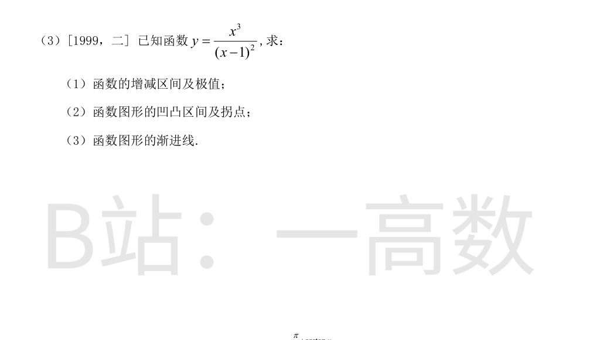
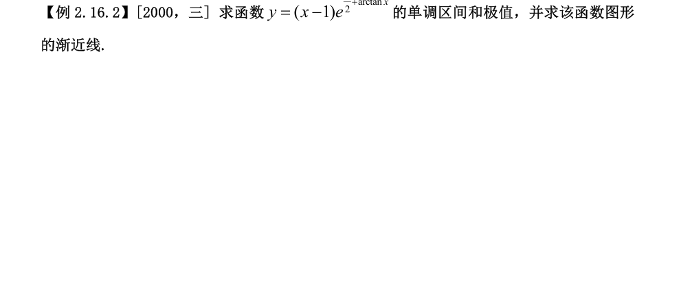

定义域 $x\ne0$。$y=\dfrac{x+1}{x^2}=\dfrac1x+\dfrac{1}{x^2}$。
$$y'=-\frac{1}{x^2}-\frac{2}{x^3}=\frac{-(x+2)}{x^3},\qquad y''=\frac{2}{x^3}+\frac{6}{x^4}=\frac{2(x+3)}{x^4}.$$
**单调性与极值**：$y'=0\iff x=-2$。
- $x<-2$：$-(x+2)>0,\ x^3<0\Rightarrow y'<0$，减；
- $-2<x<0$：$-(x+2)<0,\ x^3<0\Rightarrow y'>0$，增；
- $x>0$：$-(x+2)<0,\ x^3>0\Rightarrow y'<0$，减。
故单调减区间 $(-\infty,-2)$ 与 $(0,+\infty)$，单调增区间 $(-2,0)$；极小值点 $x=-2$，极小值 $y(-2)=\dfrac{-1}{4}=-\dfrac14$，无极大值。
**凹凸与拐点**：$y''=0\iff x=-3$（$x=0$ 不在定义域）。$x<-3$ 时 $y''<0$（凸）；$-3<x<0$ 及 $x>0$ 时 $y''>0$（凹）。$y(-3)=\dfrac{-2}{9}$，拐点 $\left(-3,-\dfrac29\right)$。
**渐近线**：$x\to0$ 时 $y\to+\infty$，铅直渐近线 $x=0$；$x\to\pm\infty$ 时 $y\to0$，水平渐近线 $y=0$；无斜渐近线。
**填表**：
| 项目 | 结果 |
|---|---|
| 单调减区间 | $(-\infty,-2)$，$(0,+\infty)$ |
| 单调增区间 | $(-2,0)$ |
| 极值点 | $x=-2$（极小值点） |
| 极值 | 极小值 $y=-\dfrac14$ |
| 凹区间 | $(-3,0)$，$(0,+\infty)$ |
| 凸区间 | $(-\infty,-3)$ |
| 拐点 | $\left(-3,\,-\dfrac29\right)$ |
| 渐近线 | $x=0$（铅直），$y=0$（水平） |
$y=\dfrac{x^3+4}{x^2}=x+\dfrac{4}{x^2}$，定义域 $x\ne0$。
$$y'=1-\frac{8}{x^3}=\frac{x^3-8}{x^3},\qquad y''=\frac{24}{x^4}>0\ (x\ne0).$$
**(1) 增减与极值**：$y'=0\iff x=2$。
- $x<0$：$\dfrac{8}{x^3}<0\Rightarrow y'>0$，增；
- $0<x<2$：$\dfrac{8}{x^3}>1\Rightarrow y'<0$，减；
- $x>2$：$0<\dfrac{8}{x^3}<1\Rightarrow y'>0$，增。
增区间 $(-\infty,0)$ 与 $(2,+\infty)$，减区间 $(0,2)$；$x=2$ 处取极小值 $y(2)=2+\dfrac44=3$，无极大值。
**(2) 凹凸与拐点**：$x\ne0$ 时 $y''=\dfrac{24}{x^4}>0$ 恒成立，凹区间为 $(-\infty,0)$ 与 $(0,+\infty)$，无凸区间；$x=0$ 为无定义点而非拐点，曲线无拐点。
**(3) 渐近线**：$x\to0$ 时 $y\to+\infty$，铅直渐近线 $x=0$；$x\to\pm\infty$ 时 $y-x=\dfrac{4}{x^2}\to0$，斜渐近线 $y=x$；无水平渐近线。
**(4) 图形**：右支：$x\to0^+$ 时 $y\to+\infty$，在 $(0,2)$ 减、$(2,+\infty)$ 增，极小值点 $(2,3)$，全程凹，位于 $y=x$ 上方，$x\to+\infty$ 时贴向 $y=x$；左支：$x<0$ 单调增且凹，$x\to-\infty$ 时沿 $y=x$ 上方趋于 $-\infty$，$x\to0^-$ 时 $y\to+\infty$。（两支均过点 $(-\sqrt[3]{4},0)$：左支与 $x$ 轴交于 $x=-\sqrt[3]{4}$。）
定义域 $x\ne1$。
$$y'=\frac{3x^2(x-1)^2-x^3\cdot2(x-1)}{(x-1)^4}=\frac{3x^2(x-1)-2x^3}{(x-1)^3}=\frac{x^2(x-3)}{(x-1)^3},$$
$$y''=\frac{(3x^2-6x)(x-1)^3-x^2(x-3)\cdot3(x-1)^2}{(x-1)^6}=\frac{(3x^2-6x)(x-1)-3x^2(x-3)}{(x-1)^4}=\frac{6x}{(x-1)^4}.$$
**(1) 增减与极值**：$y'=0\iff x=0$ 或 $x=3$。
- $x<0$：$x^2>0,\ x-3<0,\ (x-1)^3<0\Rightarrow y'>0$，增；
- $0<x<1$：$y'>0$，增；
- $1<x<3$：$x-3<0,\ (x-1)^3>0\Rightarrow y'<0$，减；
- $x>3$：$y'>0$，增。
增区间 $(-\infty,1)$ 与 $(3,+\infty)$，减区间 $(1,3)$；$x=0$ 处 $y'$ 不变号（两侧均正），非极值点；$x=3$ 处取极小值 $y(3)=\dfrac{27}{4}$，无极大值。
**(2) 凹凸与拐点**：$y''=\dfrac{6x}{(x-1)^4}$ 符号同 $x$：$x<0$ 时 $y''<0$（凸），$0<x<1$ 与 $x>1$ 时 $y''>0$（凹）。凸区间 $(-\infty,0)$，凹区间 $(0,1)$ 与 $(1,+\infty)$；$y(0)=0$，拐点 $(0,0)$。
**(3) 渐近线**：$x\to1$ 时 $y\to+\infty$，铅直渐近线 $x=1$。作除法：
$$y=\frac{x^3}{(x-1)^2}=x+2+\frac{3x-2}{(x-1)^2},$$
$x\to\pm\infty$ 时尾项 $\to0$，故斜渐近线 $y=x+2$；无水平渐近线。

$y=(x-1)e^{\frac{\pi}{2}+\arctan x}$ 在 $\mathbb{R}$ 上可导。
$$y'=e^{\frac{\pi}{2}+\arctan x}\left[1+\frac{x-1}{1+x^2}\right]=e^{\frac{\pi}{2}+\arctan x}\cdot\frac{x(x+1)}{1+x^2}.$$
**单调区间与极值**：$e^{(\cdot)}>0,\ 1+x^2>0$，故 $y'$ 符号同 $x(x+1)$：
- $x<-1$：$y'>0$，增；
- $-1<x<0$：$y'<0$，减；
- $x>0$：$y'>0$，增。
单调增区间 $(-\infty,-1]$ 与 $[0,+\infty)$，单调减区间 $[-1,0]$。极大值
$$y(-1)=(-2)\,e^{\frac{\pi}{2}+\arctan(-1)}=-2e^{\frac{\pi}{2}-\frac{\pi}{4}}=-2e^{\frac{\pi}{4}},$$
极小值 $y(0)=(-1)e^{\frac{\pi}{2}}=-e^{\frac{\pi}{2}}$。
**渐近线**：$y$ 在 $\mathbb{R}$ 上连续，无铅直渐近线；两端 $y\to\pm\infty$，分别考察斜渐近线。
$x\to+\infty$：$\arctan x\to\dfrac{\pi}{2}$，
$$a_1=\lim_{x\to+\infty}\frac{y}{x}=\lim\frac{x-1}{x}\,e^{\frac{\pi}{2}+\arctan x}=e^{\pi}.$$
利用 $x>0$ 时 $\arctan x=\dfrac{\pi}{2}-\arctan\dfrac1x=\dfrac{\pi}{2}-\dfrac1x+O(x^{-3})$：
$$y=e^{\pi}\,e^{-\arctan\frac1x}(x-1)=e^{\pi}(x-1)\left(1-\frac1x+O(x^{-3})\right)=e^{\pi}x-2e^{\pi}+o(1),$$
故 $b_1=\lim_{x\to+\infty}(y-e^{\pi}x)=-2e^{\pi}$，得渐近线 $y=e^{\pi}x-2e^{\pi}$。
$x\to-\infty$：$\arctan x\to-\dfrac{\pi}{2}$，
$$a_2=\lim_{x\to-\infty}\frac{y}{x}=e^{\frac{\pi}{2}-\frac{\pi}{2}}=1.$$
利用 $x<0$ 时 $\arctan x=-\dfrac{\pi}{2}-\arctan\dfrac1x=-\dfrac{\pi}{2}-\dfrac1x+O(x^{-3})$：
$$y=e^{-\arctan\frac1x}(x-1)=(x-1)\left(1-\frac1x+O(x^{-3})\right)=x-2+o(1),$$
故 $b_2=\lim_{x\to-\infty}(y-x)=-2$，得渐近线 $y=x-2$。
综上：单调增区间 $(-\infty,-1]$ 与 $[0,+\infty)$，单调减区间 $[-1,0]$；极大值 $-2e^{\frac{\pi}{4}}$（$x=-1$），极小值 $-e^{\frac{\pi}{2}}$（$x=0$）；渐近线 $y=x-2$ 与 $y=e^{\pi}x-2e^{\pi}$。